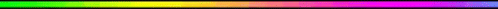

|

GenresAction Role Playing, Fantasy |
FeaturesCo-Op, Competitive, Controller Support, Multiplayer, Single Player |
MoreDota 2 is an online multiplayer game where you and four teammates choose from a roster of different heroes and, over the course of each match, gradually grow in strength and power until you’re strong enough to take down the enemy team’s Ancient – the glowing building in their home base. Latest Update!DOTA 2
Of course, the opposing team has their eye on your Ancient, too, and wants to smash it to smithereens. So the whole match is a strategic balancing act, as you decide what you need to do to gain advantage for your team, while also making sure the enemy doesn’t snowball out of control. Dota 2 Map The Dota 2 map is divided into two sides, Radiant and Dire. Radiant is on the left, and it’s a verdant, idyllic paradise. Over the river that runs diagonally from top left to bottom right, you’ll find the Dire lands on the right side of the map, all covered in bugs and stuff. Offlane and Safelane A quick note; your teammates will refer to the top, middle, and bottom lanes very often, but you will also hear the terms offlane and safelane. The top lane is the Radiant offlane and the Dire safelane, and the bottom lane is the Radiant safelane and the Dire offlane. This is because the map is not symmetrical. The safelane is, well, safer, because your teams tier one tower is closer to where the creeps meet. The offlane is the opposite the creeps meet closer to the enemys tier one tower. Vision Vision is provided by many things, including friendly creeps, heroes, buildings, couriers, and observer wards. Placing observer wards on the map is a crucial part of the game, as they provide vital information to your team. The minimap on the bottom left is a handy way to see, at a glance, which enemy heroes you have vision of, and which are missing from the map, presumably up to no good. |